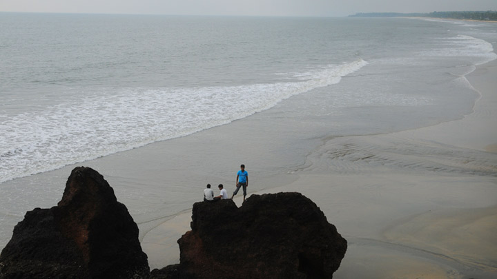
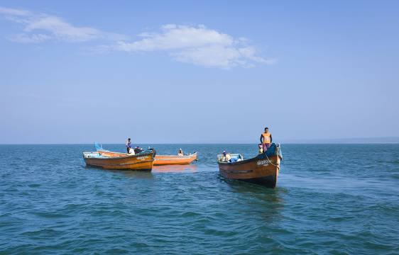
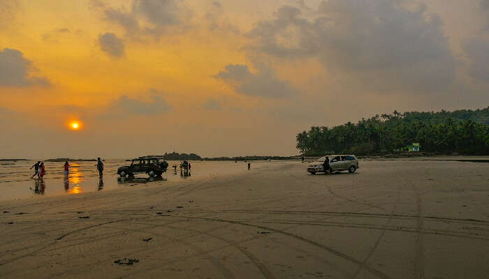
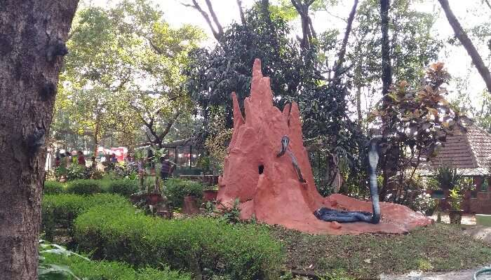

TOP DESTINATIONS
-

Payyambalam Beach
The Payyambalam Beach is an impeccably maintained destination in Kannur. This secluded location is known for providing one with the opportunity to simply relax or enjoy a family picnic in absolute tranquillity. Surfing and swimming options are also available for those who seek a little adventure. The gentle waters form a picturesque setting that has been featured in many South Indian movies as well. Being close to Kannur town has made it a favourite haunt for tourists and locals alike.
-

Mappila Bay
Mappila Bay is a natural harbor situated at Ayikkara in Kannur Municipal Corporation, Kerala state of South India. On one side of the bay is Fort St. Angelo, built by the Portuguese in the 15th century and the other side is the Arakkal Palace. The bay was famous during the Kolathiri's regime as a commercial harbour that linked Kolathunadu with Lakshadweep and foreign countries, in imports.
-

St. Angelo Fort
Situated on the coast of the mesmerising Arabian Sea, St. Angelo Fort is more than just a remarkable structure. A world heritage site, it is brimming with stories about battles to conquer it by the Portuguese and Dutch. When you are at the fort, you can enjoy a breath-taking view of the sea, natural harbour Mopilla Bay and Dharmadam Island. Inside the fort, there are beautiful, well-maintained gardens. The aura of the whole location is very relaxing. Visiting this fort is one of the best things to do in Kannur.
-

Muzhappilangad Drive-in Beach
There are many reasons to visit Muzhappilangad Drive-in Beach. It is the beach offering the longest drive-in in India. It is the cleanest beach in Kannur. And it is counted amongst the best drive-in beaches in the entire Asian continent. Rev up your vehicle and drive it along the scenic 4 km stretch of this beach, enjoying the waves, the fresh sea breeze and the scenery made dream-like by visiting birds. The beach is also open to must-try-once-in-a-lifetime adventures like parasailing, paragliding, powerboating and many more. It is truly one of the best places to see in Kannur.
-

Parassinikkadavu Snake Park
This is an unusual and one of the best Kannur sightseeing locations. This one-of-a-kind park houses all kinds of snakes- poisonous and non-poisonous, endangered, exotic, etc. You can view them from behind their glass cases. The park also has other reptiles and birds. The park also offers great amount of information about the kept animals and birds. There is information about their origin, qualities and even fun tidbits like their mood and habits. This is a great place to visit with family, especially those with kids.